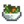

“¡Solo quiero ser como mi hermano mayor cuando crezca!”
— Vincent
Vincent es un aldeano que vive en la parte sur del Pueblo Pelícano. Él es un niño joven y puede ser encontrado con su mejor amiga Jas. Vincent mira a su hermano y quiere ser como él cuando crezca.
Agenda
En la mayoría de días, Vincent se despierta a las 9:00 AM, y juega adentro de su casa por algunas horas, antes de que se dirija al Pueblo Pelícano. Generalmente, él regresa a casa alrededor de las 7:00 PM. En los martes, miércoles y viernes; él y Jas pasan sus tardes con Penny, estudiando en el museo. Penny no les da clases durante el verano, pero durante esa estación, él a menudo pasa su tiempo en la playa.
Vincent no dejará su casa en los día de lluvia, a no ser que sea el día 11 de la primavera.
Su agenda se puede desviar, si se dan condiciones específicas como el clima o algunos días de la semana. Abajo está su agenda de desviaciones priorizada desde la más alta hacia la más baja (por ejemplo, cuando llueva, la agenda sobreescribirá las demás que están debajo).
Primavera 11
9:00 AM
Despierta, preocupado por tener que ir al doctor. "*sob*... Hoy día tengo que ponerme mis inyecciones".
11:30 AM
Deja su casa para ir a la clínica para su chequeo anual. "*gulp*... Mami, no me hagas hacerlo."
1:30 PM
Continúa su chequeo anual en la clínica. "¿Me darán una paletita por ser muy valiente?"
4:00 PM
Deja la clínica y camina hacia su casa, una vez esté adentro, jugará con sus juguetes.
Vincent vive con su madre Jodi y su hermano Sam. Su padre Kent está en la guerra durante el Año 1, pero él regresa a vivir con su familia a partir del Año 2. A menudo, Vincent es visto con su amiga Jas, quien es la única residente del pueblo cercana a su edad. Penny se tome un tiempo para dar clases a Vincent y Jas en el museo, ya que no hay una escuela cerca.
Puedes darle a Vincent hasta dos regalos por semana (Más uno en su cumpleaños), que puede aumentar o disminuir su amistad contigo. Los regalos para su cumpleaños ( 10 Primavera) tendrán un efecto amplificado por 8; y mostrará un diálogo único.
Para los regalos amados, gustados o neutrales, Vincent dirá
“
“¿Es un regalo de cumpleaños? ¿Lo puedo abrir ahora? Oh, ¡guau! ¡Es justo lo que quería! ¡Sísísísí!”
Para regalos disgustados u odiados, Vincent dirá
“
“¿Un regalo de cumpleaños? Oh... no es divertido.”
Maravillas naturales: explorando nuestro exhuberante mundo
Misterium
Le Encanta
Rompemandíbulas Sorbete de fruta estelar
Desagrada
Batido de col rizada Bolsa de aperitivos de hummus  Ensalada Panzanella Joja Cola Maíz de Joja Palomitas sabor a trufa Regaliz negro Té de jazmín
Le Gusta
Todo lo demas
Eventos de Corazón
Ocho Corazones
Después de llegar a 8 corazones con Jas y Vincent, ingrese al Bosque Tizón durante la primavera entre las 6am y las 5pm.
Detalles
Vincent explicará cómo limpiar cebolletas eliminando insectos. Jas insiste en que los insectos no mueran después de quitarlos de las cebollas. Después, el jugador gana Maestría con las cebolletas, que aumenta de forma permanente el precio de venta de las cebolletas en x5.
Citas
Regular
Primera cita
“
“¡Oh, un extraño! Mi nombre es Vincent. Mamá dice que no hable con extraños... Pero pareces bueno.”
Regular
“
“¡Solo quiero ser como mi hermano mayor cuando crezca! ¡Bueno! ¡Adiós!”
“
“*suspiro*... Mamá no me deja comer más gomitas hoy.”
“
“Quiero buscar insectos, pero mamá se enfada cuando estoy sucio. Es una decisión difícil.”
“
“Tengo hambre... ¿Dónde está mamá?”
“
“¡No eres tan aburrido como la mayoría de los adultos!”
“
“Ew, otra vez es noche de remolacha hervida...”
“
“Oh no... Mamá va a preparar lentejas esta noche.”
“
“La señorita Penny me hace leer un libro nuevo cada semana. ¡Al menos ella me deja elegirlos, a veces!”